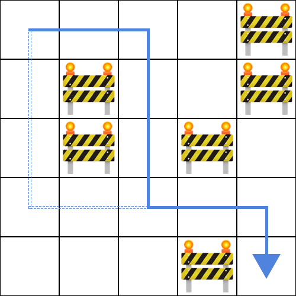
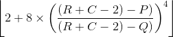

Setelah kedua hari kompetisi, peserta OSN akan mengikuti kegiatan rekreasi. Tempat rekreasi dapat direpresentasikan sebagai petak-petak yang memiliki R baris (dinomori 1 sampai R dari utara ke selatan) dan C kolom (dinomori 1 sampai C dari barat ke timur). Petak yang terletak pada baris ke-i dan kolom ke-j dinotasikan sebagai petak (i, j). Setiap petak mungkin saja kosong atau berisi penghalang.
Keadaan seluruh petak di dalam tempat rekreasi ini dapat direpresentasikan dalam sebuah matriks S.
Apabila petak (i, j) pada awalnya kosong, maka S[i][j] berisi sebuah karakter ..
Sebaliknya, apabila petak (i, j) pada awalnya berisi penghalang, maka S[i][j] berisi sebuah
karakter #.
Pintu masuk tempat rekreasi ini terletak pada petak (1, 1) dan pintu keluar tempat rekreasi ini terletak pada petak (R, C). Seluruh peserta pada awalnya berada pada petak (1, 1). Dalam setiap langkah, peserta dapat berpindah satu petak ke arah selatan atau timur, sehingga mendekati pintu keluar. Peserta hanya dapat berpindah ke petak yang kosong.
Panitia OSN telah menyiapkan rute rekreasi yang sebaiknya dilewati oleh peserta. Rute ini
direpresentasikan dalam sebuah string M yang berisi R + C - 2 karakter. Apabila langkah ke-i pada
rute ini merupakan satu petak ke arah timur, maka M[i] berisi sebuah karakter >.
Sebaliknya, apabila langkah ke-i pada rute ini merupakan satu petak ke arah selatan, maka M[i]
berisi sebuah karakter v. Rute ini dijamin hanya melewati petak kosong.
Celakanya, mungkin saja terdapat rute lain dari pintu masuk ke pintu keluar. Hal ini merepotkan panitia untuk mengawasi seluruh peserta karena peserta mungkin saja mengambil rute lain tersebut. Karenanya, panitia ingin meletakkan penghalang di beberapa petak kosong yang tidak dilewati oleh rute yang disiapkan oleh panitia agar terdapat hanya satu rute dari pintu masuk ke pintu keluar. Dengan kata lain, seluruh rute dari pintu masuk ke pintu keluar melewati himpunan petak yang persis sama dengan rute yang disiapkan oleh panitia.
Karena meletakkan penghalang di petak kosong memakan waktu, panitia ingin meletakkan sesedikit mungkin penghalang. Tentukan petak mana saja yang harus diletakkan penghalang. Apabila terdapat lebih dari satu solusi, Anda dapat mengeluarkan yang mana saja. Nilai Anda akan bergantung pada banyaknya penghalang yang Anda letakkan, menggunakan rumus yang akan dijelaskan pada bagian Penilaian.
Soal ini bertipe "output-only". Untuk setiap kasus uji, Anda menuliskan keluaran program ke dalam sebuah berkas keluaran.
Masukan untuk soal ini dapat diunduh di sini. Di dalam berkas .zip tersebut terdapat 2 + 10 masukan untuk diselesaikan: rekreasi_sample_1.in, rekreasi_sample_2.in, rekreasi_1.in, rekreasi_2.in, ..., rekreasi_10.in. Masukan contoh (rekreasi_sample_1.in dan rekreasi_sample_2.in) tidak termasuk dalam penilaian peserta.
Untuk setiap berkas masukan yang diselesaikan (Anda tidak harus menyelesaikan semua masukan), buatlah berkas keluaran dengan nama rekreasi_sample_X.out (untuk masukan contoh) atau rekreasi_X.out, dengan X adalah nomor kasus uji. Setelah itu, kompres semua berkas keluaran dalam sebuah berkas .zip, lalu kumpulkan.
Masukan diberikan dalam format berikut:
R C M[1]M[2]...M[R + C - 2] S[1][1]S[1][2]...S[1][C] S[2][1]S[2][2]...S[2][C] . . . . . . . .. S[R][1]S[R][2]...S[R][C]
R baris: baris ke-i berisi C karakter. Karakter ke-j pada baris ke-i adalah:
. jika petak (i, j) pada awalnya kosong dan Anda membiarkannya kosong.x jika petak (i, j) pada awalnya kosong dan Anda meletakkan penghalang pada
petak tersebut.# jika petak (i, j) pada awalnya berisi penghalang.Contoh ini dapat diilustrasikan dengan gambar berikut, dengan garis padat merepresentasikan rute yang disiapkan oleh panitia, sedangkan garis putus-putus merepresentasikan rute alternatif.
Karenanya, setidaknya satu petak kosong harus diletakkan penghalang. Keluaran berikut juga merupakan keluaran yang benar.
....# .#..# .#.#. .x... ...#.
Karena peserta dapat berpindah satu petak hanya ke arah selatan atau timur, peserta tidak dapat melewati jalan yang berbelok-belok pada contoh ini. Sehingga, tidak terdapat rute alternatif dan panitia tidak perlu meletakkan penghalang di petak kosong manapun.
Keluaran Anda akan mendapatkan nilai pada sebuah kasus uji jika keluaran Anda mengikuti format keluaran yang disebutkan sebelumnya dan memenuhi seluruh syarat berikut:
., maka karakter ke-j pada baris ke-i dalam keluaran Anda adalah
. atau x.#, maka karakter ke-j pada baris ke-i dalam keluaran Anda adalah
#.Jika P adalah banyaknya penghalang tambahan yang Anda letakkan, dan Q adalah banyaknya penghalang tambahan minimum yang perlu diletakkan pada solusi optimal, maka nilai yang Anda dapatkan adalah:
| Kondisi | Poin |
|---|---|
| P = Q | 10 |
| Q < P ≤ (R + C - 2) |  |
| (R + C - 2) < P ≤ (2 × (R + C - 2)) | 2 |
| (2 × (R + C - 2)) < P | 1 |
Untuk setiap kasus uji:
> atau v.. atau #...>, untuk 1 ≤ i < C.v, untuk C ≤ i ≤ R + C - 2.>, untuk 1 ≤ i < C.v, untuk C ≤ i ≤ R + C - 2.......>, untuk 1 ≤ i < C.v, untuk C ≤ i ≤ R + C - 2.>, untuk 1 ≤ i < C.v, untuk C ≤ i ≤ R + C - 2.>, untuk 1 ≤ i < C.v, untuk C ≤ i ≤ R + C - 2.